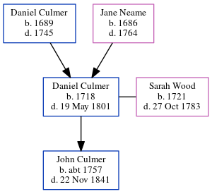

Daniel Culmer 1718 - 1801
[ Home ] | [ Calendar ] | [ Surnames Index ] | [ Errors ] | [ Family History ]The child of Daniel Culmer and Jane Neame, Daniel Culmer, the 6 times great-grandfather of Nigel Horne, was born in Kent, England in 17181,2, was baptised in Preston, Kent, England on 20 Nov 1718 and married Sarah Wood (with whom he had 1 child, John) in Thanington, Kent, England on 2 Feb 17503.
He died on 19 May 1801 in Stourmouth, Kent, England2 and was buried there at All Saints Church, Church Lane on 24 May 18014.
Parents
- Daniel was born in 1689
- Jane was born in 1686
Children
- John was born c. 1757
Citations
- Kent, Canterbury Archdeaconry burials 1538-1988 - Findmypast
- Kent, England, Tyler Index to Parish Registers, 1538-1874 Online publication - Provo, UT, USA: Ancestry.com Operations, Inc., 2010. This collection was indexed by Ancestry World Archives Project contributors.Original data - Frank Watt Tyler. The Tyler Collection. Canterbury, Kent, England: The Institute of Herald
- England Marriages 1538-1973 - Findmypast
- Kent, Canterbury Archdeaconry burials 1538-1988 - Findmypast
Media
Kent, Canterbury Archdeaconry burials 1538-1988 - GBPRS/CANT/D/95509721
Family Tree
Map
Generated by ged2site. Last updated on Jul 3, 2024
Known Issues
Date of baptism (20 Nov 1718) before date of birth (1718)